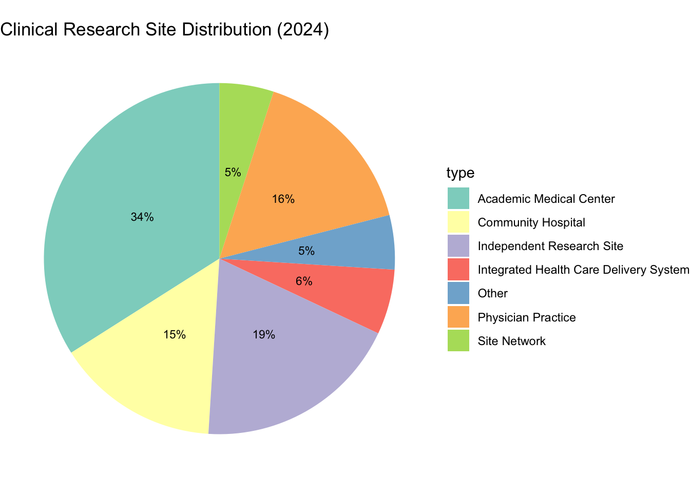
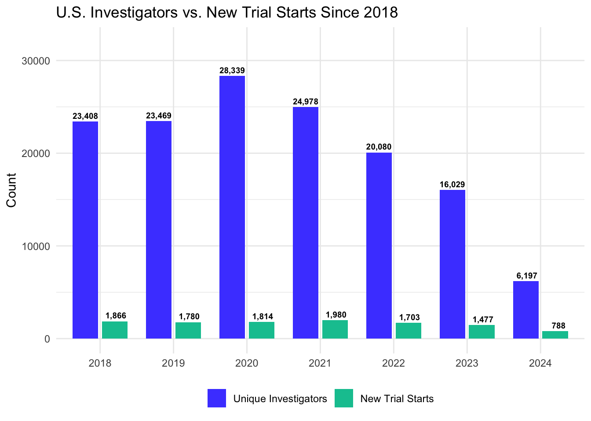
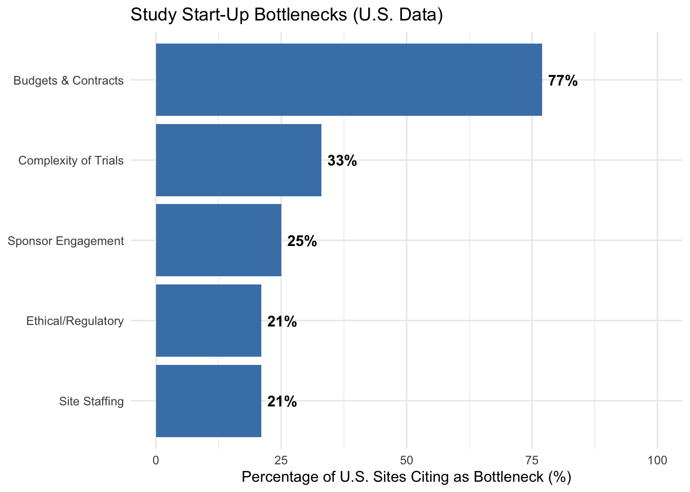
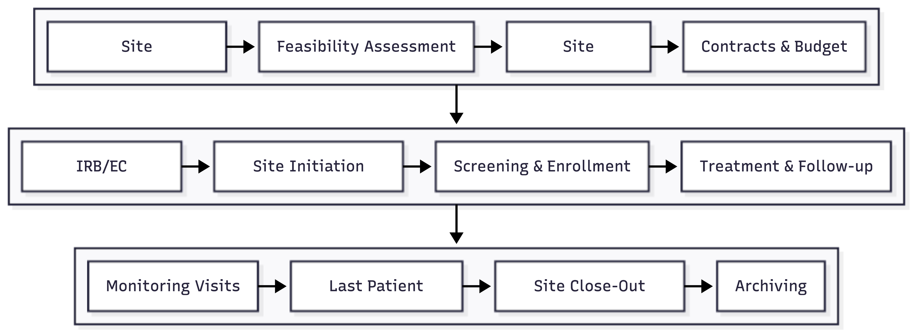

18 Site Selection and Feasibility
A clinical trial exists only on paper until it enrolls patients. Those patients must be identified, recruited, and treated at clinical sites (hospitals, academic medical centers, private practices, or specialty clinics where investigators conduct the research). The selection and qualification of these sites is primary: the wrong sites can doom a trial to slow enrollment, poor data quality, and ultimately failure.
For a Phase III trial requiring 1,000 patients, a sponsor might need 100 or more sites across multiple countries. Each site must be capable of identifying eligible patients, conducting the study procedures competently, maintaining regulatory compliance, and producing high-quality data. Finding sites that meet all these criteria, and that are genuinely committed to the trial, is harder than it might appear.
Industry surveys consistently show that patient recruitment is among the most common reasons for trial delays. Historically, benchmarks have found that roughly 11% of investigative sites fail to enroll a single patient, with an additional 37% under-enrolling relative to their targets (Tufts Center for the Study of Drug Development 2024). This means that for a significant portion of activated sites, the substantial investment in startup and training yields little to no scientific data. More recent Tufts CSDD benchmarking is somewhat more encouraging: comparing site-activation and enrollment metrics across 2012, 2019, and 2023, Lamberti and colleagues found that actual enrollment exceeded planned enrollment for a majority of studies and that timelines were often shorter than expected, though achievement varied by region and site type (Lamberti et al. 2024).
18.1 Site Identification
The search for potential sites begins with identifying investigators who have access to the target patient population. In an era of specialty care, this often means specific types of clinical practices. A rheumatoid arthritis trial needs rheumatologists. An advanced lung cancer trial needs oncologists at centers that see late-stage disease. A rare disease trial may need to identify the handful of specialists worldwide who see enough patients to meaningfully contribute.
Several factors guide site identification. Geographic distribution matters for global trials, where regulatory authorities may require data from relevant populations and where sponsors want to understand drug effects across regions. Prior experience with the sponsor, the therapeutic area, or clinical research generally can indicate capability. Access to patients matters most: a distinguished investigator who rarely sees the target population will not enroll patients.
Databases of investigators, clinical trial registries, publication records, and prior trial performance all inform site identification. Sponsor relationships with key opinion leaders and clinical networks also play important roles. The clinical research site landscape is diverse, ranging from large academic medical centers (AMCs) and integrated health systems to small, independent physician practices and site networks (see Figure 18.1).
However, the pool of available investigators is smaller than the total physician population and has faced significant contraction in recent years. While a 2004 survey found that about 13% of physicians actively served as clinical investigators (Harris Interactive 2004), the 2024 WCG Clinical Research Site Challenges Report documents a sharp contraction: the number of unique U.S. investigators fell roughly 78%, from a pandemic-inflated peak of over 28,000 in 2020 to approximately 6,200 in 2024, alongside a 57% decrease in U.S. trial starts over the same period (WCG Clinical 2024). Because 2020 was a pandemic-inflated peak, this headline overstates the structural trend: measured from the pre-pandemic level of about 23,000 investigators, the decline is closer to 73%, still a steep erosion of the base. These 2024 investigator and trial-start counts are preliminary, drawn from a partial-year ClinSphere snapshot that exaggerates the single-year drop from 2023; WCG’s more recent site-challenges reporting has continued to show the same downward direction of travel.
As shown in Figure 18.2, the trends for investigators and trial starts are distinct. While the investigator pool experienced a transient pandemic-related surge in 2020 followed by a crash, the number of new trial starts remained relatively stable (peaking near 2,000 in 2021) before beginning a precipitous decline to fewer than 800 in 2024. This downturn is driven by a combination of factors: - Post-Pandemic Normalization: A significant reduction in COVID-19-related clinical activity, which peaked in 2021. - Biotech Funding Pressure: After a sharp slowdown in 2022, biopharma funding only partially rebounded in 2023 and remained well below its 2020-21 pandemic peak, constraining emerging-biopharma companies and contributing to fewer trial starts (IQVIA Institute for Human Data Science 2024). - Rising R&D Costs: With the capitalized cost of a single novel asset now estimated at $2.2-2.6 billion (Deloitte Centre for Health Solutions 2025; DiMasi, Grabowski, and Hansen 2016), sponsors are becoming more risk-averse, focusing capital on existing late-stage pipelines rather than initiating new early-phase starts. - Operational Complexity: Mounting regulatory hurdles and administrative burdens have extended site activation timelines to 3-6 months, discouraging new starts during periods of economic uncertainty (WCG Clinical 2024).
These drivers are also structural. Increasing clinical demands leave physicians with limited bandwidth for research, while research team staffing shortages further strain site capacity. This has exacerbated the “one and done” phenomenon, where approximately 66% of physicians who participate in a clinical trial do so only once before exiting the research ecosystem (WCG Clinical 2024). The consequences of this investigator attrition for recruitment and retention are discussed further in Chapter 19.

In that same 2004 survey, among physicians not involved in clinical trials, 38% cited lack of opportunity as the main reason for not serving as a Principal or Sub-Investigator, while 32% indicated that the time commitment is prohibitive (Harris Interactive 2004). These constraints, compounded by the current exit of experienced investigators, mean that site identification is not just about finding expertise, but finding the rare combination of expertise, patient access, and operational bandwidth.
Historically, clinical trials have often failed to represent the diverse populations that will ultimately use the investigated therapies. This lack of representation compromises the external validity of trial results and can obscure important differences in safety or efficacy across demographic groups. The passage of the Food and Drug Omnibus Reform Act of 2022 (FDORA) has fundamentally altered the regulatory landscape, requiring sponsors to submit Diversity Action Plans for Phase III trials (and certain other pivotal studies) to the FDA (U.S. Congress 2022). The statutory requirement itself stands, but its implementing guidance has been in flux: FDA’s June 2024 draft Diversity Action Plans guidance was withdrawn following a January 2025 executive order on diversity, equity, and inclusion, then restored under court order weeks later, and its final version was not issued by the statutory deadline (Grossi 2025). A separate December 2025 final guidance, Enhancing Participation in Clinical Trials, kept the emphasis on representative enrollment while dropping the “diversity” framing (U.S. Food and Drug Administration 2025). Sponsors should therefore confirm the current enforcement posture rather than treat the mandate as fully settled.
Site selection is the primary operational lever for achieving diversity goals. A sophisticated site selection strategy moves beyond simply identifying high-volume academic centers to engaging sites embedded in underrepresented communities. This may involve selecting community hospitals, federally qualified health centers (FQHCs), or practices in specific geographic areas with high demographic density of the target populations.
However, selecting diverse sites presents specific operational challenges that must be managed. Sites in underresourced areas may lack the dedicated research infrastructure (study coordinators, -80°C freezers, secure storage) found in major academic centers. Sponsors must therefore assess not just the current capability of a site, but its potential capability if provided with appropriate support. The goal is to build a site network that geographically and demographically mirrors the epidemiology of the disease, ensuring that the trial data are generalizable and compliant with modern regulatory mandates.
18.2 Feasibility Assessment
Once potential sites are identified, a feasibility assessment evaluates whether each site can realistically conduct the study. This assessment typically involves questionnaires completed by site staff and may be supplemented by in-person or virtual visits.
The feasibility assessment asks several critical questions, summarized in Table 18.1.
| Category | Key Questions | Red Flags |
|---|---|---|
| Patient Access | How many target patients per year? Competing trials? | <10 eligible patients/year; Multiple competing studies |
| Investigator | Prior trial experience? Enrollment track record? | No research experience; History of poor enrollment |
| Infrastructure | Dedicated research staff? Equipment? Data systems? | No study coordinator; Inadequate facilities |
| Regulatory | IRB timeline? Institutional requirements? | IRB backlog >3 months; Complex approval layers |
| Commitment | PI availability? Staff turnover? | Part-time PI; High coordinator turnover |
The feasibility assessment explores several critical operational dimensions:
- Patient access: confirm the site has sufficient access to the target patient population and that these patients are not already committed to competing trials
- Investigator qualifications: scrutinize licensure, research experience, and historical enrollment track record to ensure capability and genuine commitment
- Physical infrastructure: verify dedicated research staff, space for study procedures, and laboratory capabilities
- Regulatory readiness: assess the efficiency of the local IRB and identify any institutional requirements that could delay startup
- Commitment: gauge PI availability and the site’s staff and coordinator turnover history, since a part-time PI or high turnover can undermine execution even at an otherwise well-resourced site
18.3 The Enrollment Prediction Problem
Perhaps the most vexing challenge in site selection is predicting how many patients each site will actually enroll. Sites are notoriously over-optimistic. An investigator who claims to see 50 eligible patients per month and predicts enrolling 30 may ultimately enroll 3.
Several factors contribute to this gap. Investigators may not accurately know how many of their patients meet eligibility criteria: the criteria are often more restrictive than general clinical practice. Patients who appear eligible on paper may decline participation or prove ineligible upon screening. Competing trials may draw away potential participants. Staff turnover or other operational issues may limit enrollment capacity.
Experienced sponsors apply skepticism to site predictions, often discounting stated estimates by 50% or more. Historical data on site performance in prior trials provides a more reliable guide than investigator optimism.
18.4 Financial and Contractual Negotiations
Between the identification of a qualified site and its activation lies a complex administrative hurdle: the negotiation of the Clinical Trial Agreement (CTA) and the site budget. This phase is a consistent bottleneck: industry benchmarks show that the cycle time from site selection to site initiation is driven more often by contract execution than by regulatory approval (WCG Clinical 2024).
The Clinical Trial Agreement is a legally binding contract that governs the relationship between the sponsor and the institution. It addresses liability, indemnification, intellectual property rights, data ownership, and publication policy. Negotiations can be protracted, particularly with large academic medical centers that adhere to rigid institutional policies regarding indemnification and subject injury. For global trials, these agreements must also align with local laws regarding data privacy and anti-bribery regulations.
The site budget is equally complex, requiring a granular accounting of both per-patient costs and overhead fees. A well-constructed budget typically includes per-subject costs for clinical procedures, investigator time, and pharmacy services. It also incorporates startup fees to cover administrative effort in regulatory submission and staff training. Pass-through costs reimburse variable expenses such as IRB fees and participant travel. Finally, an institutional overhead surcharge is applied to direct costs.
A related exercise, especially for U.S. sites, is the coverage analysis. Before a trial opens, the site reviews each protocol-required procedure to determine which costs may be billed to a participant’s insurance as routine clinical care and which must be paid by the sponsor as research costs. In the United States this determination rests on the Medicare Clinical Trial Policy (National Coverage Determination 310.1, “Routine Costs in Clinical Trials”) and, for commercial plans, the Affordable Care Act’s requirement that the routine patient costs of qualifying clinical trials be covered. Getting it wrong exposes the institution to double-billing and false-claims liability, so it demands specialized revenue-cycle expertise. Coverage analysis is one component of the study start-up work (alongside budgets and contracts) that sites most often identify as their leading source of start-up delay (WCG Clinical 2024).
Operational Bottlenecks by Site Type
The administrative burden of study start-up (coverage analysis, budgets, and contracts) is not distributed evenly across the research ecosystem. According to the 2024 WCG Clinical Research Site Challenges Report, “Study Start-up” remains the single largest operational obstacle for larger institutions (academic medical centers, health systems, and community hospitals), with 43% of these sites identifying it as a primary challenge (WCG Clinical 2024). In contrast, smaller independent sites, physician practices, and site networks report start-up as a top challenge only 24% of the time, focusing instead on recruitment and retention as their primary burden (39%).
This disparity results in significantly different trial initiation timelines. Approximately 60% of independent sites and physician practices report the ability to initiate studies in under 60 days. At larger institutions, however, the process is far more protracted: 77% of academic medical centers, health systems, and community hospitals report start-up timelines exceeding 60 days, often due to the complexity of managing multiple internal stakeholders, lack of centralized research administration, and bureaucratic regulatory layers (WCG Clinical 2024). Across all site types in the United States, “Budgets and Contracts” remain the single largest bottleneck, cited by 77% of sites as the primary contributor to start-up delays (see Figure 18.3).

Sponsors must account for these different performance profiles when designing their site selection and activation strategy, often favoring independent networks for rapid enrollment while relying on academic centers for complex therapeutic areas or highly specialized patient populations.
Budget negotiation requires balancing fiscal discipline with the reality that sites must cover their costs to remain viable. Underfunding sites invariably leads to poor attention to the study, slow data entry, and lack of prioritization relative to other, better-funded trials.
18.5 Site Initiation
Once a site is selected and regulatory approvals are obtained, the site must be initiated: prepared to enroll patients and conduct the study. Figure 18.4 illustrates the complete site lifecycle from identification through closeout.

The Site Initiation Visit (SIV) formalizes the training process. During the SIV, study personnel review the protocol in detail, walk through study procedures, demonstrate equipment, set up data systems, and ensure that essential supplies are in place. The investigator and key site staff must participate; their engagement (or lack thereof) often signals future performance.
Following the SIV, the site is authorized to begin screening and enrolling patients. The time from site selection to first patient enrolled (the site activation time) can range from weeks to months depending on regulatory complexity, contract negotiations, and site responsiveness.
Managing a global network of sites requires operational infrastructure. Training must be delivered consistently across various languages and time zones, often utilizing a combination of e-learning platforms and regional investigator meetings. Communication strategies must strike a balance: providing enough information to keep sites aligned without overwhelming staff with unnecessary updates. Simultaneously, performance management systems must track real-time metrics (enrollment rates, data quality, and query resolution times) to identify sites that need additional support or, in extreme cases, closure. Sponsors view high-performing sites as long-term partners, and investing in these relationships through transparent communication and professional support improves enrollment, data quality, and site retention across the drug development program.
Global trials introduce additional complexity beyond these core operational elements. Regulatory requirements differ by country, and language barriers affect training and documentation. Cultural factors influence patient willingness to participate in research, expectations about investigator relationships, and approaches to adverse event reporting. Standard of care may differ across regions, affecting choice of comparator and interpretation of results, while patient populations may differ in disease characteristics, comorbidities, and concomitant medications. Some regions may have limited research infrastructure requiring more intensive support, while others may have mature research environments but intense competition for investigators and patients. These differences must be considered in trial design and analysis.